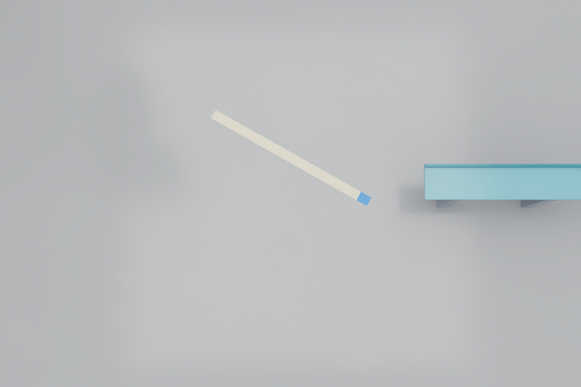

HISTORICAL / STATIC CAMERA PROTOTYPE
The first camera experiment.
Generic-scene prototype: this predates the Pi hardware selection. Continue with the Pi-specific RGB segmentation experiment and refined hardware review.
The detector receives images. A separate evaluator checks what it missed. The arm stays still.
We captured two fixed views of the desk, trained a small pixel classifier on development images, and evaluated it on new static cable poses. It can identify most of the visible cable in ordinary scenes. Its endpoint estimates are still too inaccurate to guide a grasp.
Ordinary evaluation images pass the visible-mask check: overlap of at least 0.85.
Mean mask intersection-over-union on those 16 images. This is segmentation overlap, not assembly success.
Eligible ordinary views pass the 3-pixel endpoint check. Three cropped views are ineligible.
Motion gate: not passed
Endpoint accuracy, occlusion handling and low-contrast detection remain inadequate. No grasp or insertion command is generated. Cable-face recognition, depth estimation and tactile sensing are not implemented in this experiment.
Inspect every camera image.
Choose a scene and switch between the clean RGB input, the detector’s mask and the offline review. Only the RGB input reaches the detector. Review images contain reference markers and must never become training observations.

In the review, red circles mark predicted ends and green circles mark projected physical endpoints used only for scoring. A cropped view can support visible-mask measurement without supporting two physical endpoints.
What runs, and what stays separate.
1. Capture
Isaac renders clean 960 × 640 RGB from two fixed desk cameras. Camera transforms remain constant across cases. Acquisition timestamps, image hashes and ideal camera parameters are recorded.
2. Infer
A CPU worker receives the sensor directory and frozen model in read-only mounts. It has no network or GPU access and no runtime scene or annotation directory. It produces masks and candidate endpoints.
3. Evaluate
A separate host process reads renderer labels and authored scene parameters. It measures mask overlap and endpoint error, then creates annotated review images.
The classifier was fitted to 48,000 sampled pixels from 12 development images. It uses quadratic RGB features, followed by connected-component shape checks. That is a deliberately small supervised perception baseline, not a neural action policy or a model of insertion mechanics.
We froze the model before creating the final seeded evaluation set: eight new poses from two views, plus four challenge conditions from two views. All scenes use the same synthetic cable asset. This tests variation within that asset; it does not establish generalization to real cables or another supplier.
The replay audit confirms identical predictions and masks for all 24 images when the offline-label directory was withheld. Neither inference run mounted that directory. This verifies the implemented data path; it is not an adversarial security certification.
The difficult cases still matter.
| Condition | Observed result | What it means |
|---|---|---|
| Empty desk | No false detections in either view | A useful negative check, based on only two images |
| Occlusion | Global view rejects; local view identifies only part of the cable | Recognizing a cable-colored region does not establish complete visibility |
| Blue distractor | Global view passes; local view rejects multiple plausible ribbons | Ambiguity must remain a reason to reobserve |
| Low contrast | Neither view detects the cable | The model still depends heavily on color and lighting |
The challenge set has six positive images and two empty-desk images. Only one of those six positives passes the mask threshold. Ordinary-image performance must not hide this result.
Why the endpoint result is much worse than the mask result
A mask can cover most of a long cable while missing its short stiffened end. That small missing area barely changes overlap, but it shifts the endpoint by many pixels. Perspective and partial visibility further limit the current principal-axis endpoint estimate. The next detector needs explicit endpoint and stiffener supervision, with uncertainty and rejection tests.
Earlier failures retained for comparison
The first fixed-color detector found the cable in only 3 of 12 held-out ordinary images. A learned pixel classifier initially selected the larger shelf region. Checking every candidate’s shape fixed that selection failure, but did not solve endpoint localization. Those earlier evaluation images are now development/validation evidence; the final seeded set was generated after the selection logic was frozen.
Initial color baseline · Initial learned baseline with failed region selection
Watch the capture review.
This 12-second video cycles through the 24 static camera images at two images per second. It is a review of test cases, not a dynamic robot rollout or evidence of real-time inference.
This experiment used a simplified PCB.
This historical capture used an assumed PCB/connector envelope, not a verified manufacturer assembly. The reference FH12 outer dimensions do not provide validated internal guides, contact springs, latch mechanics, solder geometry or board compliance. This desk-camera experiment does not close that gap.
Before contact learning, we must freeze the exact cable and connector pair, obtain drawings or CAD, and measure insertion, retention and latch behavior on physical samples. A successful mask or a geometrically seated simulated cable cannot certify a completed electrical connection.
After the new hardware passes review.
The selected Pi 4 and Camera Module 3 CAD are now loaded in a separate static scene. Appearance and mating geometry still need qualification before we continue the perception steps below.
- Annotate physical cable ends, the stiffener and contact-face cues in development images. Train an endpoint-specific detector, not just a body mask.
- Evaluate new poses, occlusion and lighting without moving the arm. Keep cropped, ambiguous and low-confidence observations out of motion control.
- Validate a real camera/lens setup and image timing. Current timestamps measure render completion on a host clock, not hardware exposure or synchronized sensor acquisition.
- Only after perception passes, connect bounded approach and pickup to pressure and tactile retention checks.
The static capture, image-ingress tests and isolated replay are implemented. Live multimodal synchronization, a sensor-driven motion supervisor and the physical sensor models remain future work.
Measurements and reproducibility.
A full rerun passed 16/16 ordinary mask checks, with mean overlap 0.93207, but only 1/13 endpoint checks. RTX image variation affected a borderline endpoint result. Neither run passes the motion gate.
All 24 image results
| Case | Camera | Mask IoU | Worst endpoint error | Endpoint gate |
|---|---|---|---|---|
| final-00 | global | 0.893 | 13.42 px | not passed |
| final-00 | local | 0.978 | 5.29 px | not passed |
| final-01 | global | 0.918 | 21.22 px | not passed |
| final-01 | local | 0.974 | 4.37 px | not passed |
| final-02 | global | 0.890 | 18.94 px | not passed |
| final-02 | local | 0.973 | not available | not passed |
| final-03 | global | 0.914 | 21.18 px | not passed |
| final-03 | local | 0.897 | 52.73 px | not passed |
| final-04 | global | 0.891 | 18.78 px | not passed |
| final-04 | local | 0.934 | 4.64 px | not passed |
| final-05 | global | 0.921 | 19.96 px | not passed |
| final-05 | local | 0.966 | 2.03 px | pass |
| final-06 | global | 0.906 | 1.70 px | pass |
| final-06 | local | 0.981 | not available | not passed |
| final-07 | global | 0.921 | 21.17 px | not passed |
| final-07 | local | 0.964 | not available | not passed |
| final-absent | global | 1.000 | not available | not passed |
| final-absent | local | 1.000 | not available | not passed |
| final-occluded | global | 0.000 | not available | not passed |
| final-occluded | local | 0.526 | not available | not passed |
| final-distractor | global | 0.969 | 2.10 px | pass |
| final-distractor | local | 0.000 | not available | not passed |
| final-low_contrast | global | 0.000 | not available | not passed |
| final-low_contrast | local | 0.000 | not available | not passed |
“Not available” means the detector did not supply both endpoints, or both physical endpoints were not inside the image. Failed detections remain in the mask denominator. We have no physical accuracy or reliability estimate from this small synthetic set.
Full evaluation JSON · Camera parameters · Raw-image manifest · Frozen classifier · Capture scope
Reproduce from the repository with the existing Isaac Docker image and Python environment:
scripts/run_sensor_milestone.sh your-fresh-run-idImplementation notes and test evidence · Full architecture and research roadmap